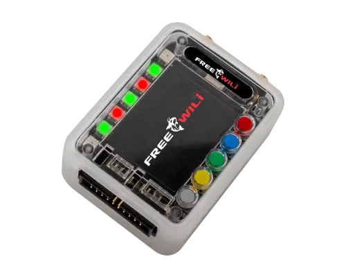
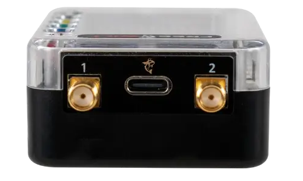

FREE-WILi OG
FREE-WILi OG is the embedded development tool you have been waiting for. It is designed to simplify the process of testing, debugging, and developing electronic systems, while packing a wide range of interfaces and hardware features into one portable device.
It works equally well as a bench companion, a field instrument, a learning platform for embedded systems, and a nearly-finished development platform you can adapt for your own product or research workflow.

Use Cases
- I2C USB interface
- SPI USB interface
- UART USB interface
- USB attached screen and buttons
- UART based protocol tool support
- TPMS fuzzer or simulator
- Keyless entry simulator or monitor
- Cybersecurity penetration testing
- Development platform that is 80% done
- Learning platform for embedded systems
Feature Set
- GPIO interfaces: SPI, I2C, PIO, and UART available on GPIO.
- USB architecture: 3 USB interfaces through an integrated hub with 2 full-speed and 1 high-speed connection for communication and power.
- Programmable GPIO levels: 11 GPIO with programmable voltage levels from 1.1 V to 5.5 V with 24 mA at 3 V or 32 mA at 5 V using SN74LXC1T45.
- I2C level shifting: 2 GPIO for I2C voltage levels between 0.9 V and 5.5 V with software-enabled 10K pull resistors using PCA9517.
- FPGA front end: GPIO front end includes an ICE40UP5K FPGA with 8 MByte SRAM and high-speed USB through FT232H.
- Radio connectors: two SMA connectors for longer-range antenna configurations.
- Display: 320 x 240 color display.
- User input: 5 user-configurable buttons and 7 full-color LEDs.
- Infrared: IR transmitter and receiver onboard.
- Audio: digital speaker and microphone.
- Custom application processor: Raspberry Pi Pico RP2040 open micro platform for specific applications or custom code.
- Expansion: Orca modules plug into the GPIO header for use-case-specific expansion.
- Firmware support: IO App firmware exercises all I/O, USB Host API, and standalone scripting.
- Storage: 16 MByte x 2 onboard storage with 22 MByte usable.
- Power: 1000 mA lithium-ion battery with integrated charger.
- Timekeeping: real-time clock RTC.
- Motion sensing: accelerometer.
Core hardware
- Main MCU
- Raspberry Pi Pico RP2040 open micro platform
- Programmable I/O
- SPI, I2C, PIO, UART, and GPIO voltage control from 1.1 V to 5.5 V
- FPGA
- ICE40UP5K with 8 MByte SRAM and FT232H high-speed USB front end
- Display
- 320 x 240 color display with 5 configurable buttons and 7 RGB LEDs
- Audio / IR
- Digital speaker, microphone, IR transmitter, and IR receiver
Connectivity and expansion
- USB
- Integrated hub with 3 USB interfaces: 2 full-speed and 1 high-speed
- I2C level support
- 0.9 V to 5.5 V on dedicated I2C lines with software-enabled 10K pulls
- Expansion
- Orca modules connect through the GPIO header for hardware specialization
- Firmware
- IO App firmware supports I/O exercise, USB Host API, and standalone scripting
- Field use
- Ideal for protocol tooling, simulation, fuzzing, and embedded learning
Portable platform
- Storage
- 16 MByte x 2 onboard storage, with 22 MByte usable
- Battery
- 1000 mA lithium-ion battery with integrated charger
- RTC
- Onboard real-time clock
- Sensors
- Accelerometer included
- Radio connectors
- Two SMA connectors for longer-range antenna setups
Radio Versions

FREE-WILi OG currently has one radio option:
FREE-WILi OG contains two CC1101 Sub Ghz Radios with programmable filter ranges for 300-348, 387-464, 779-928 bands.
Why Choose FREE-WILi OG?
FREE-WILi OG is an all-encompassing tool designed to meet embedded development challenges head-on. Whether you are a professional developer or a hobbyist, FREE-WILi OG provides the versatility, functionality, and ease of use needed to bring projects to life.